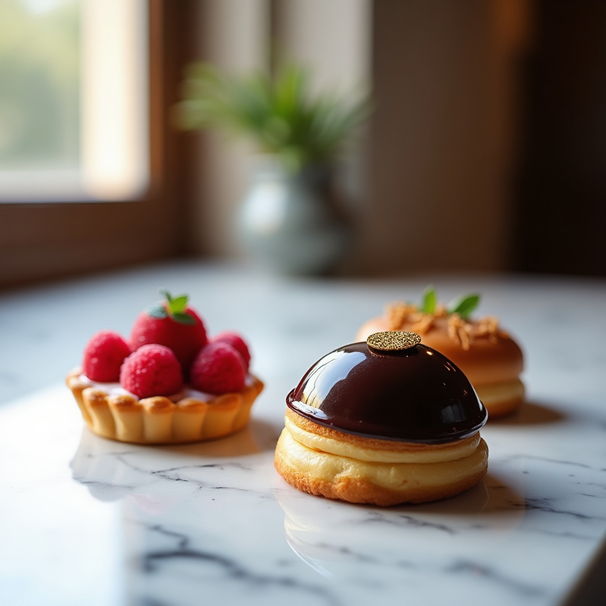
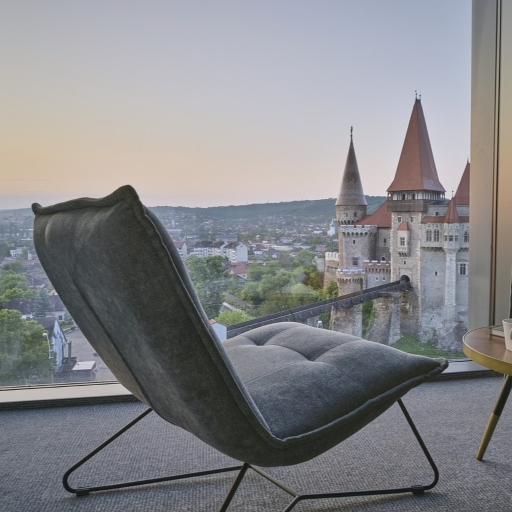
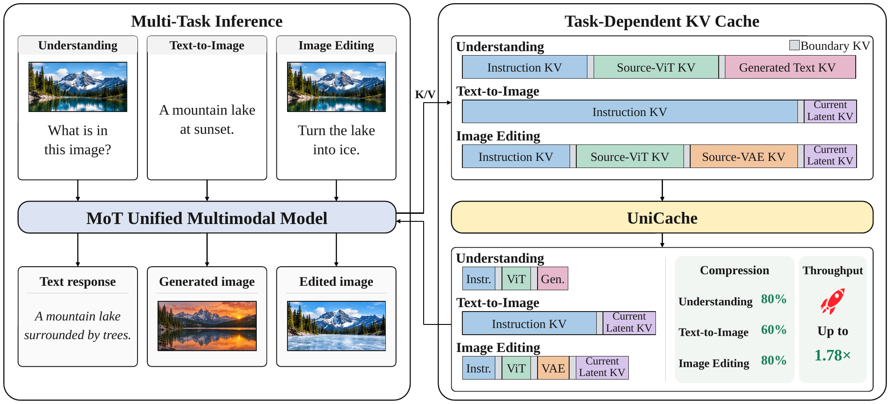
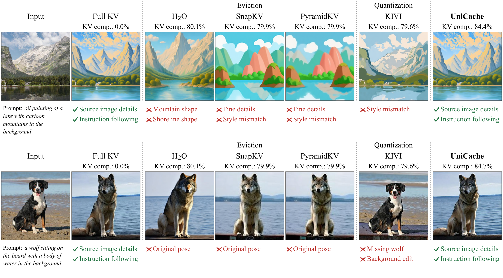
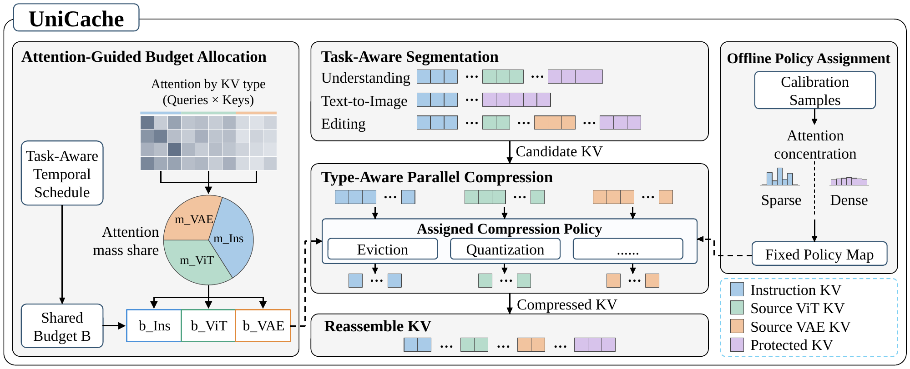

Image Generation Samples

Image generation samples produced by our UniCache optimized BAGEL model. The compression rate is 60%. These are showcase prompts, not benchmark samples.
Image Editing Samples
Each example shows the source image, editing prompt, and edited output.
“a white tulip on the rail”
“a heart shape cake with orange frosting on a painted wooden plate”

“anime of a chair and table in front of a window overlooking a castle”
Task-Dependent Cache Composition
In MoT-based unified multimodal models, the information required by different tasks is represented by distinct KV cache types.
Image understanding
Image understanding uses instruction and source-ViT KVs to represent the instruction and the source image's semantic information, respectively.
Text-to-image generation
Text-to-image generation conditions on instruction KV.
Image editing
Image editing uses instruction, source-ViT, and source-VAE KVs together, with source-VAE KV providing source-image details.


UniCache
UniCache identifies the KV cache types present in each task and separates compression candidates from protected segments. Through offline calibration of attention distributions, UniCache assigns suitable compression policies to different candidate types.
Task-Aware Cache Segmentation
UniCache partitions the attention context into segments based on the current task and semantic role.
Offline Policy Assignment
UniCache assigns a compression policy to each candidate task--type pair using attention sparsity measured through offline calibration.
Attention-Guided Dynamic Budget Allocation
UniCache estimates cache importance by aggregating attention probabilities over chunks of layers and inference steps, reducing scheduling frequency.
Type-Aware Parallel Compression
Once configured, each policy maintains its own runtime state and compresses only its assigned segments, allowing the segment compression to execute independently and in parallel.

Empirical Results
UniCache effectively mitigates the failure modes encountered by prior KV cache compression methods and achieves balanced quality in all evaluated tasks through task-aware and type-aware KV cache compression.
BAGEL
| Method | MME ↑ | GenEval ↑ | PIE Structure ↓ | PIE PSNR ↑ |
|---|---|---|---|---|
| Full KV | 2373.21 | 0.781 | 0.101 | 18.805 |
| Global H₂O | 2372.60 | 0.777 | 0.125 | 14.663 |
| Global KIVI | 2362.31 | 0.777 | 0.098 | 18.576 |
| UniCache | 2377.36 | 0.780 | 0.100 | 18.969 |
SenseNova-U1
| Method | MME ↑ | MMMU ↑ | GenEval ↑ | PIE Structure ↓ |
|---|---|---|---|---|
| Full KV | 2396.50 | 47.67 | 0.887 | 0.099 |
| Global H₂O | 2290.27 | 47.67 | 0.875 | 0.142 |
| Global KIVI | 2377.65 | 47.00 | 0.888 | 0.131 |
| UniCache | 2383.72 | 48.00 | 0.892 | 0.100 |
Up to 5×logical KV compression in understanding and editing
Up to 1.78×throughput in the reported long-context, single-A100 physical-engine setting
Get Started
The repository includes a PyTorch reference implementation, a physical CUDA engine, and a full-KV baseline. Model weights are obtained separately.
Installation and backend details ↗python infer.py --backend torch --task understanding \
--model-path checkpoints/BAGEL-7B-MoT \
--image /path/to/source.jpg \
--prompt "Describe the image." \
--output-dir outputs/understanding